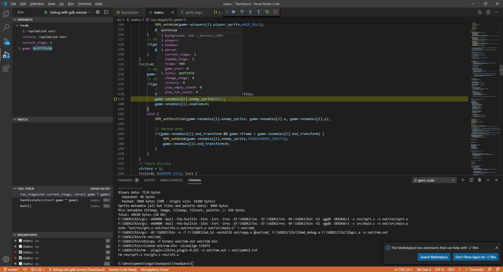

Debugging Options
Genesis code, can help you to create a configuration for remote debugging with GDB. With this configuration you can use an emulator like GensKMod or Blastem for open a remote debug session using GDB.
When you create a new Project Genesis code, adds a folder called .vscode that contains all the configuration of your project. Now Genesis code create a launch.json file with the minimum configuration for open a remote debuging session.
NOTE: This file depends of your Operating System and the Toolchain selected on the Genesis code Settings (SGDK/GENDEV or MARSDEV).
REMEMBER: Before open a debug session you need to call the Genesis Code: Compile with Debug Options command.
Lets see one example of the launch.json file:
{
"version": "0.2.0",
"configurations": [
{
"name": "Debug with gdb remote",
"request": "launch",
"type": "cppdbg",
"program": "${workspaceRoot}\\out\\rom.out",
"miDebuggerServerAddress": "localhost:6868",
"sourceFileMap": {
"d:\\apps\\sgdk\\src\\": "${env:GDK}\\src\\",
},
"args": [],
"stopAtEntry": true,
"cwd": "${workspaceFolder}",
"environment": [],
"externalConsole": false,
"MIMode": "gdb",
"launchCompleteCommand": "exec-continue",
"miDebuggerPath": "${env:GDK}\\bin\\gdb.exe",
"setupCommands": [
{
"text": "set directories '${workspaceFolder};$cwd;$cdir'"
}
],
}
]
}
NOTE: This json file corresponds to the Windows SGDK version.
Lets see some properties of this file:
- program: The program that need to be used with GDB; this is one of the files created when you compile with debug options; contains information about the Symbols table.
- miDebuggerServerAddress: Address and port used for connect with the emulator. Change the port when you use GensKMod or Blastem. This is only used on Windows System.
- sourceFileMap: The libmd used in SGDK, contains the statics source file paths; so you need to reconfigure them for your SGDK instalation folder.
- miDebuggerPath: This is the path of your GDB executable.
NOTE: Some versions of Blastem, can crash when is used with vscode debugging session; this is a unimplemented features in Blastem for the GDB protocol.
If you need more information about how to debug with VSCODE, please see VSCODE Debug Configuration page. Also, you can see more information in the GDB web page.
